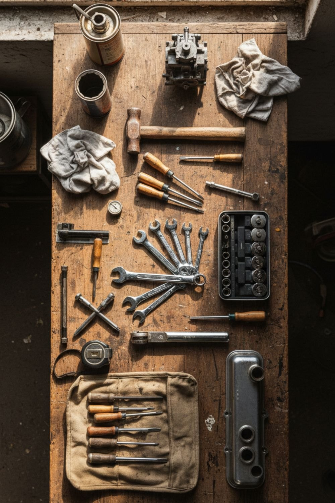
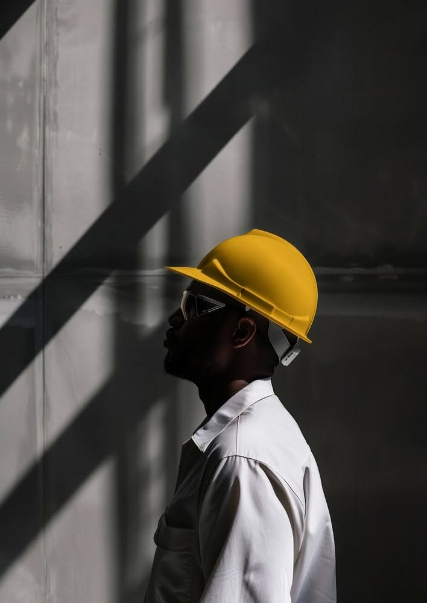
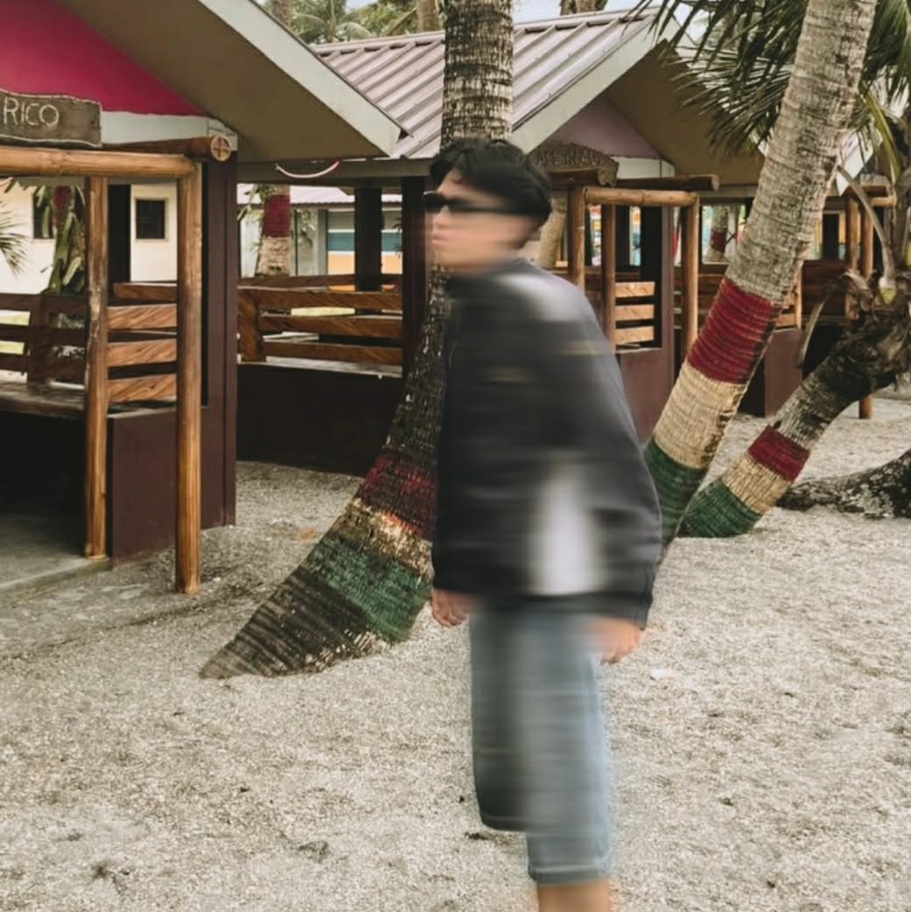

Repair
Karaoke speakers, washing machines, anything with a loose screw. Fixing hardware taught me to ask what fails first and why.
Ayusan.PH was built by Jarbie Deleon — someone who opens up broken things to see why they stopped.
Move across the bench.Tap the bench.
I started with karaoke speakers and washing machines. Something stopped working, so I opened it up, found the loose part and closed it again. Ayusan.PH is that same habit pointed at a barangay: find what is broken in how neighbours find each other, and repair it.

Karaoke speakers, washing machines, anything with a loose screw. Fixing hardware taught me to ask what fails first and why.

HTML, CSS and plain JavaScript in the browser; PHP and MySQL behind it. No framework to hide behind, so every line has to earn its place.
ESP32 boards and sensors, for the problems that live in the real world instead of on a screen.

Residents who need a fix, workers who deserve to be found, and PESO staff who keep the record. The site is for all three.

Designer and developer of Ayusan.PH
The idea behind the site: a barangay already has the skills it needs. The hard part is finding them.
Sira? Ayusan.
© 2026 Ayusan.PH · Built in Oriental Mindoro